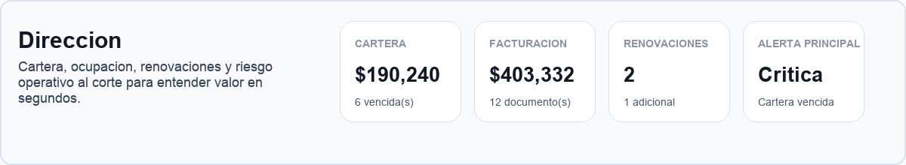
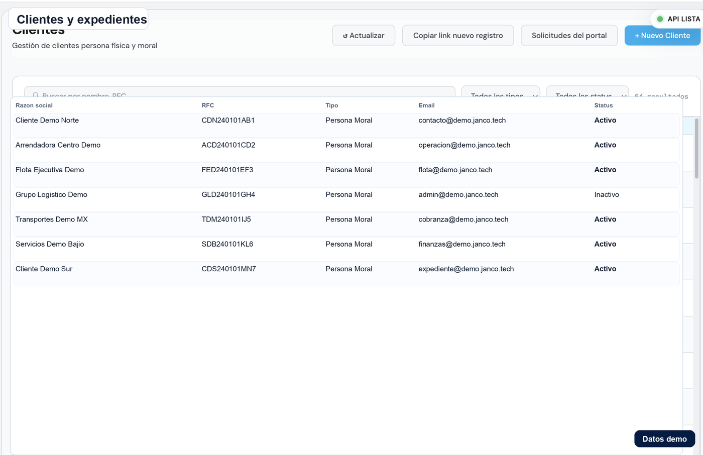
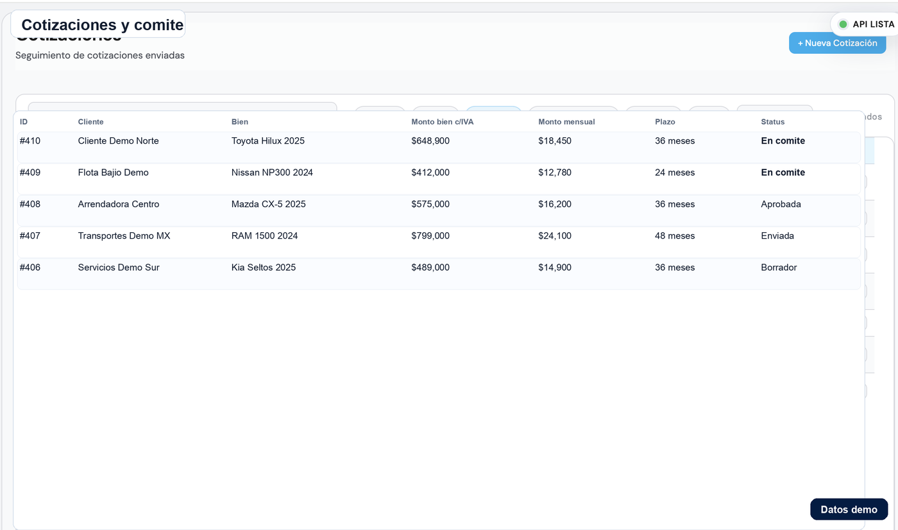
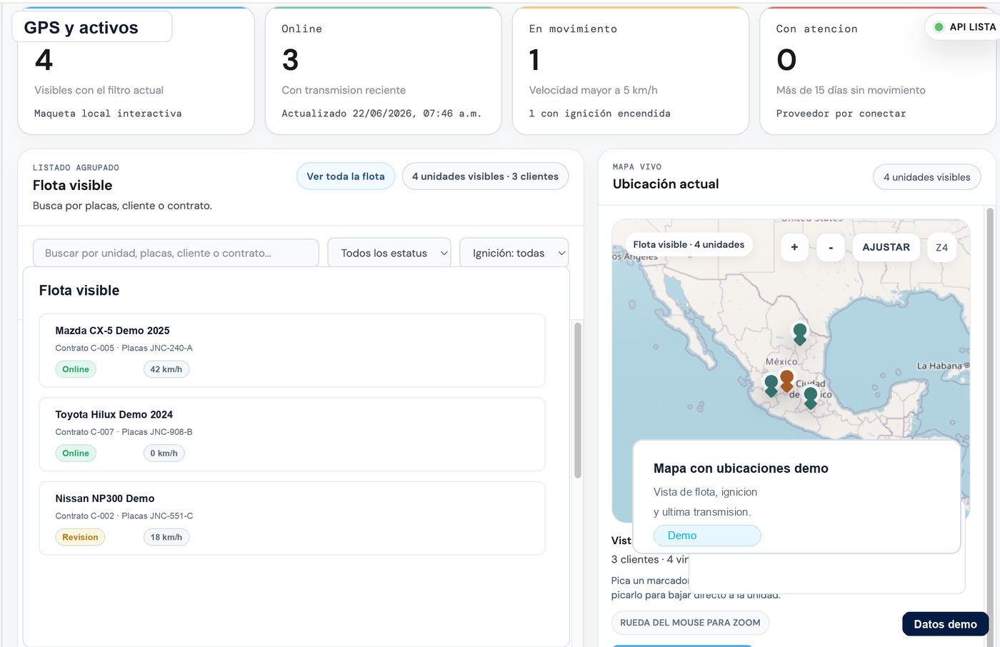
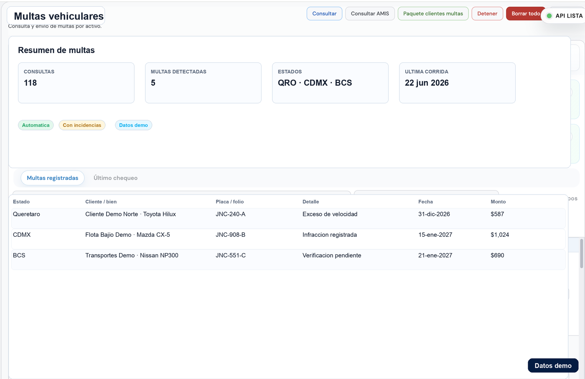
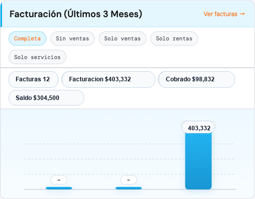

Arrendamiento puro con control de punta a punta.
No es un sistema de financiamiento adaptado. Janco está hecho exclusivamente para arrendamiento puro: cliente, cotización, autorización, contrato, anexos, activos, facturación, cobranza, multas vehiculares y tesorería.
Contratos y cobranza
Para empresas que viven entre contratos, activos y cobranza.
El valor no está solo en registrar información, sino en conectar áreas que normalmente terminan separadas: comercial, operaciones, cobranza, facturación, tesorería y seguimiento de activos.
Exclusivo para arrendamiento puro
No parte de un flujo genérico de financiamiento; el sistema nace alrededor de contratos, anexos, activos y cobranza.
Cotizaciones y comité
Rutas para preparar propuestas, revisar condiciones y pasar de intención comercial a contrato.
Contratos y anexos
Control de contratos maestros, anexos, activos relacionados y documentos operativos.
Facturación y cobranza
Seguimiento de facturas, vencimientos, remanentes, promesas de pago y cartera.
Tesorería y reportes
Visibilidad para movimientos, conciliación, cartera, reportes por cliente y operación financiera.
Multas vehiculares
Consulta automática de multas de vehículos en varios estados para dar seguimiento operativo a los activos.
01Cliente
Alta, expediente y condiciones comerciales.
02Cotización
Propuesta, validación y autorización.
03Contrato
Contrato maestro, anexos, activos y documentos.
04Cobranza
Facturas, pagos, tesorería y reportes.
Prueba visual
Prueba visual del flujo de arrendamiento
Capturas con datos demo para mostrar cómo se ve el control de dirección, contratos, activos, multas, cobranza y facturación sin exponer información sensible. Toca una captura para ampliarla sin salir de la página.
{kind=link}


{kind=link}

{kind=link}


{kind=link}

{kind=link}

{kind=link}

Oferta inicial
Arranca con una implementación clara.
La propuesta final depende de módulos, usuarios, migración de datos e integraciones, pero la conversación puede empezar con números concretos.
Software hecho exclusivamente para arrendamiento puro
Janco no es una adaptación de financiamiento. El sistema está pensado para conectar contrato, activo, factura, pago, multas vehiculares y reporte, para que el equipo sepa qué está vigente, vencido o pendiente.
- Software para contratos de arrendamiento puro
- Sistema de cobranza y vencimientos
- Control de activos y anexos
- Consulta automática de multas vehiculares
- Reportes de cartera y tesorería
Arrendamiento puro
Sistema y software para arrendamiento puro en México
Las empresas de arrendamiento puro necesitan más que un CRM o un sistema financiero genérico. El flujo real vive entre clientes, activos, anexos, documentos, facturación, cobranza para arrendadoras, multas vehiculares y reportes de cartera.
Contratos, anexos y activos conectados
Cada contrato puede relacionarse con sus anexos, activos, documentos y condiciones comerciales para que el equipo no pierda contexto entre áreas.
Software de cobranza para arrendadoras
El sistema ayuda a revisar rentas, vencimientos, pagos, cartera por cliente, promesas de pago y reportes financieros sin depender de archivos dispersos.
Multas vehiculares en varios estados
Para operaciones con vehículos, Janco puede consultar automáticamente multas vehiculares en distintos estados y dar seguimiento a cada activo.
Preguntas frecuentes
¿Es un sistema adaptado de financiamiento?
No. Está diseñado exclusivamente para arrendamiento puro, por eso el flujo encaja mejor con contratos, anexos, activos, cobranza y operación del día a día.
¿Puede consultar multas vehiculares?
Sí. El sistema puede consultar automáticamente multas de vehículos en varios estados para ayudar al seguimiento operativo de activos.
¿Sirve para administrar contratos y anexos?
Sí. La demo puede revisar contrato maestro, anexos, activos relacionados, documentos y seguimiento por cliente.
¿Puede apoyar con facturación y cobranza?
El flujo está pensado para conectar facturas, vencimientos, pagos, cartera y reportes financieros.
¿Qué debe resolver un software para arrendamiento puro en México?
Debe conectar clientes, cotizaciones, contratos, anexos, activos, documentos, facturación, cobranza, multas vehiculares, tesorería y reportes para operar sin depender de hojas aisladas.
¿También funciona como software de cobranza para arrendadoras?
Sí. El flujo de cobranza ayuda a revisar rentas, vencimientos, pagos, promesas de pago, cartera por cliente, contratos relacionados y reportes para dirección.
¿Se puede implementar por etapas?
Sí. Lo recomendable es arrancar con clientes, contratos y cobranza antes de agregar flujos especiales o reportes avanzados.
Veamos tu flujo de arrendamiento.
La demo ideal revisa un cliente, una cotización, un contrato y una cobranza para aterrizar si el sistema encaja con tu operación.
Solicitar demo
También podemos preparar una demo con datos de ejemplo antes de conectar información real.